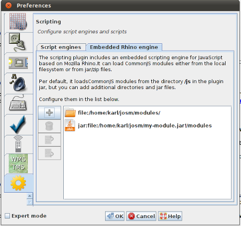

The embedded scripting engine runs scripts in a scripting context. There is only one context for all scripts in JOSM. It is initialized when the Scripting Plugins starts up and destroyed when JOSM is terminated. It is is populated with the following two objects:
josmrequire()require() is a global function to load CommonJS modules.The embedded scripting engine can load CommonJS-compatible modules.
Here's an example scripts which loads the built built in module josm/util.
{% highlight javascript %} var util = require("josm/util"); util.println("Hello world!"); {% endhighlight %}You can implement and use your own modules.
Here's an example of a simple CommonJS-module which exports the function sayHello().
A client script can load and use the module. Here's an example:
{% highlight javascript %} var hello = require("helloworld"); hello.sayHello(); {% endhighlight %}The places, where the Scripting Plugin is looking for modules, can be configured in the preferences. It looks for modules in two places:
/js.
There is a special module ScriptingPluginStart which, if present, is
loaded automatically when the Scripting Plugin starts. The following templates shows, that this plugin
can export two functions which will be invoked by JOSM on startup and when the map
frame changes.
The default location of this module is in $JOSM_HOME/plugins/scripting/modules.